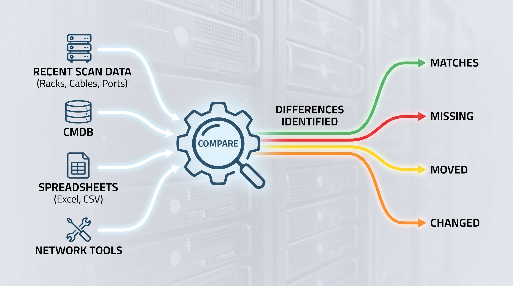
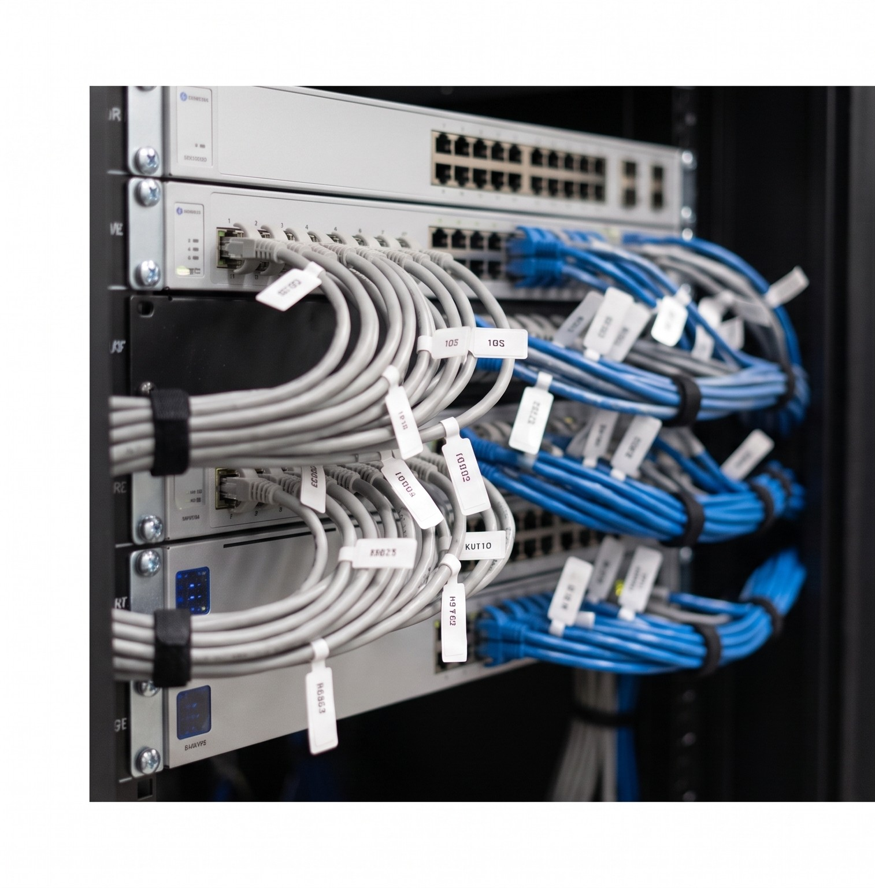

Walk the aisle, scan the rack
Open the app and walk down the row. RackTrack photographs every rack, cable, and port as you pass: no special hardware, no downtime.
Why RackTrack
Point your phone at the rack. RackTrack checks what it sees against what your systems say, and shows you exactly where they stop matching.
How it works
You don't need to learn a new system to use RackTrack. Here's the entire process, start to finish.
Open the app and walk down the row. RackTrack photographs every rack, cable, and port as you pass: no special hardware, no downtime.

RackTrack compares what it just saw with your existing systems (your CMDB, spreadsheets, and network tools) automatically, in the background.
Get a plain list: what matches, what's missing, what moved, and what changed since the last scan. No decoding required.
Evidence and trust
Most infrastructure records start in software and slowly drift from reality. RackTrack starts at the cabinet itself (the real hardware), then checks the software record against what's actually there. Drag the slider to see it happen.
 Unverified
Unverified
One photo, reconciled. Every card below traces back the same way.
Click through, or use the arrows: each card is one thing RackTrack proves.

Every entry in your inventory links back to the real photo RackTrack took of that rack. No guessing where a number came from.
When a compliance team asks you to prove a rack matches your records, you hand them evidence, not a spreadsheet someone hopes is current.
RackTrack traces the physical path from port to port, something most inventory tools can't see at all.
See RackTrack in action
Bring one rack or row. We'll scan it live and show you exactly where it matches your records, and where it doesn't.
Request platform brief